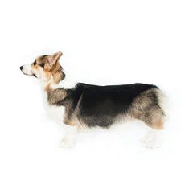
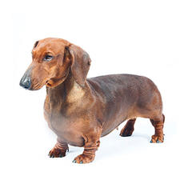
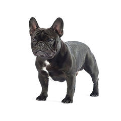
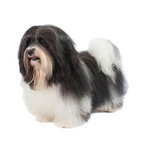

This is a Goodboi Fanpage!
have you ever seen such heckin Goodbois? I bet you haven't! Sign up below to subscribe to our weekly newsletter

Types of goodbois

The Corgi is a low-set herding dog that also makes an agreeable house dog.

Dachshunds are lively little characters known for their short legs and distinct long bodies. Nicknamed “wiener dogs”

The large bat ears and even disposition of the French Bulldog makes the breed, or “Frenchies,” one of the world’s most popular small-dog breeds.

Hailing from Havana, Cuba, the Havanese is a sturdy toy breed with a cheerful and affectionate disposition.
“If you pick up a starving dog and make him prosperous he will not bite you. This is the principal difference between a dog and man.”
Call to action! It's time!
Join our newsletter to start your journey to goodboi apprecation